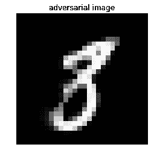

机器学习可以帮助我们诊断和抗击癌症，决定哪所学校最适合我们的孩子，并进行最明智的房地产投资。但你只能通过访问私人和个人数据来回答这些问题，这需要一种新颖的机器学习方法。这种方法被称为安全和私有人工智能，在最近几年，已经取得了长足的进步，正如你将在下面的食谱中看到的。
本章包含以下配方:
以下是本章的技术先决条件:
安装说明、代码和数据集可以在https://github . com/packt publishing/Machine-Learning-for-cyber security-Cookbook/tree/master/chapter 08找到。
在这个菜谱中，我们将使用TensorFlow联邦框架训练一个联邦学习模型。
为了理解为什么联合学习是有价值的，当你写短信时，考虑一下你手机上的下一个单词预测模型。出于隐私原因，您不会希望将数据(即您的文本消息)发送到中央服务器来用于训练下一个单词预测器。但是有一个准确的下一个单词预测算法还是不错的。怎么办？这就是联合学习的用武之地，它是一种为解决这种隐私问题而开发的机器学习技术。
联合学习的核心思想是，训练数据集仍在其生产者手中，保留隐私和所有权，同时仍用于训练集中式模型。该特征在网络安全中特别有吸引力，例如，在网络安全中，从许多不同的来源收集良性和恶意样本对于创建强模型是至关重要的，但是由于隐私问题而很困难(例如，良性样本可以是个人或机密文档)。
顺便提一下，由于数据隐私越来越重要(例如，GDPR法案的颁布)，联合学习已经获得了越来越多的关注。苹果和谷歌等大公司已经开始在这项技术上投入巨资。
该配方的准备包括在pip中安装tensorflow_federated、tensorflow_datasets和tensorflow包。该命令如下所示:
pip install tensorflow_federated==0.2.0 tensorflow-datasets tensorflow==1.13.1
我们将安装这些包的特定版本，以防止代码中的任何中断。
在以下步骤中，您将创建两个虚拟数据集环境，一个属于Alice，另一个属于Bob，并使用联合平均来保护数据机密性。
import tensorflow as tf
tf.compat.v1.enable_v2_behavior()
import tensorflow_datasets as tfds
first_50_percent = tfds.Split.TRAIN.subsplit(tfds.percent[:50])
last_50_percent = tfds.Split.TRAIN.subsplit(tfds.percent[-50:])
alice_dataset = tfds.load("fashion_mnist", split=first_50_percent)
bob_dataset = tfds.load("fashion_mnist", split=last_50_percent)
def cast(element):
"""Casts an image's pixels into float32."""
out = {}
out["image"] = tf.image.convert_image_dtype(element["image"], dtype=tf.float32)
out["label"] = element["label"]
return out
def flatten(element):
"""Flattens an image in preparation for the neural network."""
return collections.OrderedDict(
[
("x", tf.reshape(element["image"], [-1])),
("y", tf.reshape(element["label"], [1])),
]
)
import collections
BATCH_SIZE = 32
def preprocess(dataset):
"""Preprocesses images to be fed into neural network."""
return dataset.map(cast).map(flatten).batch(BATCH_SIZE)
preprocessed_alice_dataset = preprocess(alice_dataset)
preprocessed_bob_dataset = preprocess(bob_dataset)
federated_data = [preprocessed_alice_dataset, preprocessed_bob_dataset]
def custom_loss_function(y_true, y_pred):
"""Custom loss function."""
return tf.reduce_mean(
tf.keras.losses.sparse_categorical_crossentropy(y_true, y_pred)
)
from tensorflow.python.keras.optimizer_v2 import gradient_descent
LEARNING_RATE = 0.02
def create_compiled_keras_model():
"""Compiles the keras model."""
model = tf.keras.models.Sequential(
[
tf.keras.layers.Dense(
10,
activation=tf.nn.softmax,
kernel_initializer="zeros",
input_shape=(784,),
)
]
)
model.compile(
loss=custom_loss_function,
optimizer=gradient_descent.SGD(learning_rate=LEARNING_RATE),
metrics=[tf.keras.metrics.SparseCategoricalAccuracy()],
)
return model
batch_of_samples = tf.contrib.framework.nest.map_structure(
lambda x: x.numpy(), iter(preprocessed_alice_dataset).next()
)
def model_instance():
"""Instantiates the keras model."""
keras_model = create_compiled_keras_model()
return tff.learning.from_compiled_keras_model(keras_model, batch_of_samples)
from tensorflow_federated import python as tff
federated_learning_iterative_process = tff.learning.build_federated_averaging_process(
model_instance
)
state = federated_learning_iterative_process.initialize()
state, performance = federated_learning_iterative_process.next(state, federated_data)
performance
输出如下所示:
AnonymousTuple([(sparse_categorical_accuracy, 0.74365), (loss, 0.82071316)])
我们从导入TensorFlow并启用急切执行开始(步骤1 )。通常，在TensorFlow中，操作不会立即执行。相反，会构建一个计算图，最后，所有操作会一起运行。在急切执行中，计算会尽快执行。接下来，在步骤2 中，我们导入时尚MNIST数据集。这个数据集已经成为MNIST的事实上的替代品，提供了一些改进(比如增加了挑战)。然后，我们在Alice和Bob之间对半细分数据集。然后，我们定义一个函数，将时尚MNIST的像素值从整数转换为浮点数，用于训练我们的神经网络(步骤3 )，另一个函数将图像展平为单个向量(步骤4 )。这使我们能够将数据输入一个完全连接的神经网络。在步骤5 和步骤6 中，我们使用之前定义的便利函数对Alice和Bob的数据集进行预处理。
接下来，我们定义对我们的10类分类任务有意义的损失函数(步骤7 )，然后定义我们的Keras神经网络以准备训练(步骤8 )。在步骤9 中，我们创建一批虚拟样本，并定义一个函数从Keras模型返回一个联合学习模型。虚拟样本批次指定了模型预期的输入形状。在步骤10 中，我们运行联合平均过程的一个阶段。关于该算法的细节可以在题为从分散数据进行深度网络的通信高效学习的论文中找到。
在基本层面上，该算法在每个客户端的数据上结合局部随机梯度下降 ( SGD )，然后使用执行模型平均的服务器。结果是为客户保密(在我们的例子中，是Alice和Bob)。最后，在步骤11 中，我们观察我们的性能，看到算法确实如预期的那样训练和提高了准确性。
在本菜谱中，我们将介绍加密计算的基础知识。特别是，我们将关注一种流行的方法，称为安全多方计算。您将学习如何构建一个简单的加密计算器，可以对加密数字执行加法。这个食谱中的想法在私人深度学习预测食谱中会派上用场。
下面的食谱除了Python之外没有任何安装要求。
import random
P = 67280421310721
def encrypt(x):
"""Encrypts an integer between 3 partires."""
share_a = random.randint(0, P)
share_b = random.randint(0, P)
share_c = (x - share_a - share_b) % P
return (share_a, share_b, share_c)
x = 17
share_a, share_b, share_c = encrypt(x)
print(share_a, share_b, share_c)
16821756678516 13110264723730 37348399908492
def decrypt(share_a, share_b, share_c):
"""Decrypts the integer from 3 shares."""
return (share_a + share_b + share_c) % P
decrypt(share_a, share_b, share_c)
输出如下所示:
17
def add(x, y):
"""Addition of encrypted integers."""
z = list()
z.append((x[0] + y[0]) % P)
z.append((x[1] + y[1]) % P)
z.append((x[2] + y[2]) % P)
return z
x = encrypt(5)
y = encrypt(9)
decrypt(*add(x, y))
14
我们从步骤1 开始，导入随机库，以便在步骤2 中生成随机整数。我们还定义了一个大素数P，因为我们需要一个随机分布模P。在步骤2 中，我们定义了一个函数如何通过在三方之间分割来加密一个整数。这里x的值在三方之间随机地相加分割。所有运算都在整数模p域中进行。接下来，在步骤3 中，我们演示使用我们的方法加密整数的结果。进行到步骤4 和 5 ，我们定义一个反向加密的函数，即解密，然后证明该操作是可逆的。在第6步中，我们定义了一个函数将两个加密数字(！).请注意，加密加法只是单个组件的加法，以p为模。在加密深度学习预测配方中，使用了PySyft的.share(client, server,...)命令。这个命令基本上是我们在这个食谱中使用的相同的加密过程，所以请记住，这些加密方案使用我们在这里讨论的技术。最后，在步骤7 中，我们展示了我们可以在加密的实体上执行计算。
在许多情况下，公司A可能有一个训练有素的模型，它希望作为服务提供。同时，A公司可能不愿意分享这种模式，以避免其知识产权被盗。这个问题的简单解决方案是让客户将他们的数据发送给公司A，然后从它那里接收预测。然而，当客户希望保护他们数据的隐私时，这就成了一个问题。为了解决这种棘手的情况，该公司及其客户可以利用加密计算。
在这个食谱中，您将学习如何与客户共享加密的预训练深度学习模型，并允许客户使用加密的模型对他们自己的私人数据进行预测。
这个配方的准备包括在pip中安装PyTorch、Torchvision和PySyft。该命令如下所示:
pip install torch torchvision syft
此外，一个名为server_trained_model.pt的预先训练好的模型已经包含在此配方中。
以下步骤利用PySyft来模拟客户端-服务器交互，其中服务器具有作为黑盒保存的预训练深度学习模型，并且客户端希望使用该模型来预测保密的数据。
import torch
import torch.nn as nn
import torch.nn.functional as F
from torchvision import datasets, transforms
import syft as sy
hook = sy.TorchHook(torch)
client = sy.VirtualWorker(hook, id="client")
server = sy.VirtualWorker(hook, id="server")
crypto_provider = sy.VirtualWorker(hook, id="crypto_provider")
class Net(nn.Module):
def __init__(self):
super(Net, self).__init__()
self.fc1 = nn.Linear(784, 500)
self.fc2 = nn.Linear(500, 10)
def forward(self, x):
x = x.view(-1, 784)
x = self.fc1(x)
x = F.relu(x)
x = self.fc2(x)
return x
model = Net()
model.load_state_dict(torch.load("server_trained_model.pt"))
model.eval()
model.fix_precision().share(client, server, crypto_provider=crypto_provider)
test_loader = torch.utils.data.DataLoader(
datasets.MNIST(
"data",
train=False,
download=True,
transform=transforms.Compose(
[transforms.ToTensor(), transforms.Normalize((0.1307,), (0.3081,))]
),
),
batch_size=64,
shuffle=True,
)
private_test_loader = []
for data, target in test_loader:
private_test_loader.append(
(
data.fix_precision().share(client, server, crypto_provider=crypto_provider),
target.fix_precision().share(
client, server, crypto_provider=crypto_provider
),
)
)
def test(model, test_loader):
"""Test the model."""
model.eval()
n_correct_priv = 0
n_total = 0
with torch.no_grad():
for data, target in test_loader:
output = model(data)
pred = output.argmax(dim=1)
n_correct_priv += pred.eq(target.view_as(pred)).sum()
n_total += 64
n_correct =
n_correct_priv.copy().get().float_precision().long().item()
print(
"Test set: Accuracy: {}/{} ({:.0f}%)".format(
n_correct, n_total, 100.0 * n_correct / n_total
)
)
test(model, private_test_loader)
结果如下:
Test set: Accuracy: 63/64 (98%)
Test set: Accuracy: 123/128 (96%)
Test set: Accuracy: 185/192 (96%)
Test set: Accuracy: 248/256 (97%)
Test set: Accuracy: 310/320 (97%)
Test set: Accuracy: 373/384 (97%)
Test set: Accuracy: 433/448 (97%)
<snip>
Test set: Accuracy: 9668/9920 (97%)
Test set: Accuracy: 9727/9984 (97%)
Test set: Accuracy: 9742/10048 (97%)
我们首先导入torch及其数据集，以及一些相关的库(步骤1 )。然后我们导入pysyft并将其挂钩到torch ( 步骤2 )。我们还为客户机和服务器创建虚拟环境，以模拟真实的数据分离。在这一步中，crypto_provider作为可信的第三方，用于加密和解密。在步骤3 中，我们定义了一个简单的神经网络，在步骤4 中，我们加载了它的预训练权重。请注意，在步骤5 中，更一般地说，每当使用.share(...)命令时，您应该认为共享对象是加密的，并且只有在所有相关方的协助下才可能解密。具体来说，在步骤9 中，测试函数执行加密评估；模型的权重、数据输入、预测和用于评分的目标都被加密。但是，为了验证模型是否正常工作，我们解密并显示其准确性。在步骤5 中，我们对网络进行加密，这样只有当服务器和客户端合作时，它们才能解密网络。
在接下来的两步中，我们为MNIST数据定义常规和私有加载器。常规加载器只是加载MNIST数据，而私有加载器对常规加载器的输出进行加密。在步骤8 和 9 中，我们定义了一个helper函数来评估私有测试集。在这个函数中，我们迭代私有数据，使用模型进行预测，解密结果，然后打印出来。最后，我们应用步骤8 和 9 中定义的函数来确定模型运行良好，同时保护隐私。
对神经网络的对抗性攻击的研究揭示了对对抗性扰动的惊人的敏感性。即使是最精确的神经网络，在不设防的情况下，也容易受到单像素攻击和人眼不可见噪声的干扰。幸运的是，该领域的最新进展提供了如何强化神经网络以应对各种敌对攻击的解决方案。一个这样的解决方案是被称为综合分析的T2的神经网络设计。该模型背后的主要思想是，它是一个贝叶斯模型。该模型不是直接预测给定输入的标签，而是使用变分自动编码器 ( VAEs )学习类条件样本分布。更多信息可在https://arxiv.org/abs/1805.09190找到。
在本食谱中，您将为MNIST加载一个预训练的ABS网络，并学习如何测试神经网络的对抗性鲁棒性。
以下配方已经在Python 3.6中测试过。准备这个菜谱需要在pip中安装Pytorch、Torchvision、SciPy、Foolbox和Matplotlib包。该命令如下所示:
pip install torch torchvision scipy foolbox==1.8 matplotlib
在下面的步骤中，我们将为MNIST加载一个预训练的ABS模型和一个传统的CNN模型。我们将使用Foolbox攻击这两种模型，看看它们能在多大程度上抵御对抗性攻击:
from abs_models import models
from abs_models import utils
ABS_model = models.get_VAE(n_iter=50)
import numpy as np
def predict_on_batch(model, batch, batch_size):
"""Predicts the digits of an MNIST batch."""
preds = []
labels = []
for i in range(batch_size):
point, label = utils.get_batch()
labels.append(label[0])
tensor_point = utils.n2t(point)
logits = model(tensor_point)[0]
logits = [x for x in logits]
pred = np.argmax(logits)
preds.append(int(pred))
return preds, labels
batch = utils.get_batch()
preds, labels = predict_on_batch(ABS_model, batch, 5)
print(preds)
print(labels)
结果如下:
[4, 4, 9, 1, 8]
[4, 4, 9, 1, 8]
import foolbox
if ABS_model.code_base == "tensorflow":
fmodel = foolbox.models.TensorFlowModel(
ABS_model.x_input, ABS_model.pre_softmax, (0.0, 1.0), channel_axis=3
)
elif ABS_model.code_base == "pytorch":
ABS_model.eval()
fmodel = foolbox.models.PyTorchModel(
ABS_model, bounds=(0.0, 1.0), num_classes=10, device=utils.dev()
)
from foolbox import attacks
images, labels = utils.get_batch(bs=1)
attack = attacks.DeepFoolL2Attack(fmodel)
metric = foolbox.distances.MSE
criterion = foolbox.criteria.Misclassification()
from matplotlib import pyplot as plt
%matplotlib inline
plt.imshow(images[0, 0], cmap="gray")
plt.title("original image")
plt.axis("off")
plt.show()
生成的图像如下:
gradient_estimator = foolbox.gradient_estimators.CoordinateWiseGradientEstimator(0.1)
fmodel = foolbox.models.ModelWithEstimatedGradients(fmodel, gradient_estimator)
adversary = foolbox.adversarial.Adversarial(
fmodel, criterion, images[0], labels[0], distance=metric
)
attack(adversary)
plt.imshow(a.image[0], cmap="gray")
plt.title("adversarial image")
plt.axis("off")
plt.show()
print("Model prediction:", np.argmax(fmodel.predictions(adversary.image)))
产生的对立图像如下:

from abs_models import models
traditional_model = models.get_CNN()
模型架构如下:
CNN(
(net): NN(
(conv_0): Conv2d(1, 20, kernel_size=(5, 5), stride=(1, 1))
(bn_0): BatchNorm2d(20, eps=1e-05, momentum=0.1, affine=True, track_running_stats=True)
(nl_0): ELU(alpha=1.0)
(conv_1): Conv2d(20, 70, kernel_size=(4, 4), stride=(2, 2))
(bn_1): BatchNorm2d(70, eps=1e-05, momentum=0.1, affine=True, track_running_stats=True)
(nl_1): ELU(alpha=1.0)
(conv_2): Conv2d(70, 256, kernel_size=(3, 3), stride=(2, 2))
(bn_2): BatchNorm2d(256, eps=1e-05, momentum=0.1, affine=True, track_running_stats=True)
(nl_2): ELU(alpha=1.0)
(conv_3): Conv2d(256, 10, kernel_size=(5, 5), stride=(1, 1))
)
(model): NN(
(conv_0): Conv2d(1, 20, kernel_size=(5, 5), stride=(1, 1))
(bn_0): BatchNorm2d(20, eps=1e-05, momentum=0.1, affine=True, track_running_stats=True)
(nl_0): ELU(alpha=1.0)
(conv_1): Conv2d(20, 70, kernel_size=(4, 4), stride=(2, 2))
(bn_1): BatchNorm2d(70, eps=1e-05, momentum=0.1, affine=True, track_running_stats=True)
(nl_1): ELU(alpha=1.0)
(conv_2): Conv2d(70, 256, kernel_size=(3, 3), stride=(2, 2))
(bn_2): BatchNorm2d(256, eps=1e-05, momentum=0.1, affine=True, track_running_stats=True)
(nl_2): ELU(alpha=1.0)
(conv_3): Conv2d(256, 10, kernel_size=(5, 5), stride=(1, 1))
)
)
preds, labels = predict_on_batch(traditional_model, batch, 5)
print(preds)
print(labels)
打印输出如下:
[7, 9, 5, 3, 3]
[7, 9, 5, 3, 3]
if traditional_model.code_base == "tensorflow":
fmodel_traditional = foolbox.models.TensorFlowModel(
traditional_model.x_input,
traditional_model.pre_softmax,
(0.0, 1.0),
channel_axis=3,
)
elif traditional_model.code_base == "pytorch":
traditional_model.eval()
fmodel_traditional = foolbox.models.PyTorchModel(
traditional_model, bounds=(0.0, 1.0), num_classes=10, device=u.dev()
)
fmodel_traditional = foolbox.models.ModelWithEstimatedGradients(fmodel_traditional, GE)
adversarial_traditional = foolbox.adversarial.Adversarial(
fmodel_traditional, criterion, images[0], labels[0], distance=metric
)
attack(adversarial_traditional)
plt.imshow(adversarial_traditional.image[0], cmap="gray")
plt.title("adversarial image")
plt.axis("off")
plt.show()
print(
"Model prediction:",
np.argmax(fmodel_traditional.predictions(adversarial_traditional.image)),
)
产生的对立图像如下:
我们首先导入一个预训练的ABS模型(步骤1 )。在步骤2 和步骤3 中，我们定义了一个convenience函数来预测一批MNIST图像，并验证模型是否正常工作。接下来，我们使用Foolbox包装该模型，为测试其对抗性健壮性做准备(步骤4 )。请注意，Foolbox在包装后使用相同的API方便了对TensorFlow或PyTorch模型的攻击。不错！在步骤5 中，我们选择一个MNIST图像作为我们攻击的媒介。为了澄清，这个图像被调整和变异，直到结果欺骗了模型。在步骤6 中，我们选择想要实施的攻击类型。我们选择边界攻击，这是一种基于决策的攻击，从大的敌对扰动开始，然后在保持敌对的同时逐渐减少扰动。该攻击几乎不需要超参数调整，因此没有替代模型和梯度计算。有关基于决策的攻击的更多信息，请参考https://arxiv.org/abs/1712.04248。
此外，请注意，这里使用的度量是均方误差 ( MSE )，它决定了如何评估对立示例是接近还是远离原始图像。使用的标准是错误分类，这意味着一旦目标模型错误分类图像，搜索就终止。替代标准可以包括置信水平或特定类型的错误分类。在步骤7-9 中，我们显示原始图像，以及从其生成的对抗示例。在接下来的两步中，我们实例化一个标准的CNN并验证它是否正常工作。在步骤12-14 中，我们在标准CNN上重复了之前步骤中的攻击。观察结果，我们看到该实验是一个强有力的视觉指示器，表明ABS模型比普通的CNN对对抗性扰动更鲁棒。
TensorFlow Privacy(https://github.com/tensorflow/privacy)是tensor flow家族相对较新的成员。这个Python库包括TensorFlow优化器的实现，用于训练具有差分隐私的机器学习模型。已被训练为差分私有的模型不会因为从其数据集中移除任何单个训练实例而发生重大变化。使用ε和δ来量化(近似)差分隐私，这给出了模型对单个训练示例中的变化的敏感程度的度量。使用隐私库很简单，只需包装熟悉的优化器(例如，RMSprop、Adam和SGD ),将它们转换成不同的私有版本。该库还提供了测量隐私保证、ε和δ的便利工具。
在这个食谱中，我们向您展示了如何使用Keras和TensorFlow Privacy为MNIST实现和训练一个差分私有深度神经网络。
这个食谱的准备工作包括安装Keras和TensorFlow。该命令如下所示:
pip install keras tensorflow
TensorFlow Privacy的安装说明可在https://github.com/tensorflow/privacy找到。
import tensorflow as tf
def preprocess_observations(data):
"""Preprocesses MNIST images."""
data = np.array(data, dtype=np.float32) / 255
data = data.reshape(data.shape[0], 28, 28, 1)
return data
def preprocess_labels(labels):
"""Preprocess MNIST labels."""
labels = np.array(labels, dtype=np.int32)
labels = tf.keras.utils.to_categorical(labels, num_classes=10)
def load_mnist():
"""Loads the MNIST dataset."""
(X_train, y_train), (X_test, y_test) = tf.keras.datasets.mnist.load_data()
X_train = preprocess_observations(X_train)
X_test = preprocess_observations(X_test)
y_train = preprocess_labels(y_train)
y_test = preprocess_labels(y_test)
return X_train, y_train, X_test, y_test
import numpy as np
X_train, y_train, X_test, y_test = load_mnist()
训练集的大小是60 k，测试集的大小是10 k。
4.导入差异专用优化器，并定义几个参数来控制学习率和差异专用程度:
from privacy.optimizers.dp_optimizer import DPGradientDescentGaussianOptimizer
optimizer = DPGradientDescentGaussianOptimizer(
l2_norm_clip=1.0, noise_multiplier=1.1, num_microbatches=250, learning_rate=0.15
)
loss = tf.keras.losses.CategoricalCrossentropy(
from_logits=True, reduction=tf.losses.Reduction.NONE
)
from privacy.analysis.rdp_accountant import compute_rdp
from privacy.analysis.rdp_accountant import get_privacy_spent
def compute_epsilon(steps):
"""Compute the privacy epsilon."""
orders = [1 + x / 10.0 for x in range(1, 100)] + list(range(12, 64))
sampling_probability = 250 / 60000
rdp = compute_rdp(
q=sampling_probability, noise_multiplier=1.1, steps=steps, orders=orders
)
return get_privacy_spent(orders, rdp, target_delta=1e-5)[0]
NN_model = tf.keras.Sequential(
[
tf.keras.layers.Conv2D(
16, 8, strides=2, padding="same", activation="relu", input_shape=(28, 28, 1)
),
tf.keras.layers.MaxPool2D(2, 1),
tf.keras.layers.Conv2D(32, 4, strides=2, padding="valid", activation="relu"),
tf.keras.layers.MaxPool2D(2, 1),
tf.keras.layers.Flatten(),
tf.keras.layers.Dense(32, activation="relu"),
tf.keras.layers.Dense(10),
]
)
NN_model.compile(optimizer=optimizer, loss=loss, metrics=["accuracy"])
NN_model.fit(
X_train, y_train, epochs=1, validation_data=(X_test, y_test), batch_size=250
)
eps = compute_epsilon(1 * 60000 // 250)
我们从准备和加载MNIST数据集开始步骤1-3 。接下来，在步骤4 中，我们导入DPGradientDescentGaussianOptimizer，这是一个优化器，它允许模型变成差分私有的。在这一阶段使用了许多参数，这些参数有待澄清。l2_norm_clip参数指的是在微型批次的单个训练数据点上计算的每个梯度的最大范数。此参数限制了优化器对单个训练点的敏感度，从而将模型推向差异隐私。noise_multiplier参数控制添加到渐变中的随机噪声量。一般噪音越大，私密性越大。完成这一步后，在步骤5 中，我们定义一个函数来计算差分隐私的ε-δ定义的ε。我们实例化一个标准的Keras神经网络(步骤6 ，编译它(步骤7 ，然后使用差分私有优化器在MNIST上训练它(步骤8 )。最后，在步骤9 中，我们计算epsilon的值，它测量模型的不同私有程度。该配方的典型值是大约1的ε值。